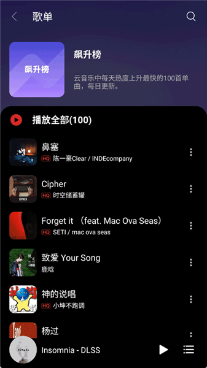

TuneFree 深度解析：一个开源音乐聚合器的技术取舍之道
从多音源聚合架构到跨平台分发策略，拆解 TuneFreeNext 背后的设计原理，聊聊一个公益开源项目能走到今天的技术逻辑。
我一直在想一个问题：当一款音乐播放器同时要搞定 Windows 桌面、Android 手机、还有网页端，还要在背后偷偷聚合网易云、QQ 音乐、酷我三家音源——它到底是怎么做到「不崩」的？
大多数同类产品要么只做单一平台，要么音源锁定一家，TuneFreeNext 偏不。它像一个同时在三个厨房炒菜的厨师，还要把每家的菜都按各自的火候做对味。这背后的设计取舍，比它的功能列表有意思多了。
多音源聚合：不是简单的「加个接口」
很多人以为聚合多家音源就是在后端写几个 API 调用，前端做个下拉切换就完事了。实际没这么简单——每家音源返回的数据格式不一样、搜索接口参数不同、甚至音质分级的标准都各说各话。
TuneFree 的做法是在音源层之上加了一层统一抽象。这层抽象干三件事：把不同音源的搜索结果标准化成统一的歌曲对象、把音质标签映射到一套通用分级、把下载链接的临时 token 处理封装起来。对上层播放界面来说，它拿到的永远是同一种数据结构——至于底层是从哪家拉的，界面根本不关心。
这个设计的好处是显而易见的：新增一个音源只需要写一个适配器，上层逻辑一行都不用改。代价也很直接——每个音源适配器都要处理那家的各种边角情况，比如有的音源下载链接有时效性需要现取现用，有的音源高音质需要额外鉴权。 TuneFree文档里提到的「现取直链」就是这个抽象层干的活：用户点击下载时才去请求临时链接，而不是提前缓存——因为提前存下来大概率会过期。

跨平台分发：绿色版、APK、Web 三套逻辑
我特意留意了 TuneFree 的安装渠道说明——从下载页可以拿到三端安装包：Windows 有绿色便携版和安装程序两种，Android 走 APK 直装，Web 版直接浏览器打开。三种形态，背后是三套不同的分发策略。
Windows 绿色版的设计尤其有意思——解压即用、只写 AppData、不碰注册表。这不是偷懒，而是一个开源公益项目的理性选择：没有代码签名证书，安装程序版会被 SmartScreen 拦截得更厉害；绿色版至少还能通过「更多信息 → 仍要运行」绕过。写 AppData 而不是程序目录，也是为了兼容没有管理员权限的 Windows 账户。
Android 端的 APK 分发更直接——绕开应用商店，官网直装。文档里明确提示「第三方应用商店可能托管了旧版或被修改的 APK」，这其实是开源项目的通用困境：没有签名证书保护，任何渠道都可能被中间人篡改。解决办法不是防篡改，而是引导用户回到源头。
Web 版是最微妙的一环——它不需要下载任何文件，但也意味着功能可能受限。为什么不把所有功能都做进 Web？因为浏览器沙箱限制，下载管理、文件校验这些本地能力在 Web 里根本做不了。Web 版更像是一个轻量入口，满足「偶尔听听」的场景，重度用户还是得回到桌面或安卓端。
下载机制：从断点续传到完整性校验
TuneFree 的下载模块藏着不少工程细节。文档里提到的几个点值得单独说：并发下载数建议不超过 3 个、下载卡住可以暂停再继续、Hi-Res 文件建议 WiFi 环境。
并发控制看起来是个简单参数，但背后是带宽抢占问题。同时拉太多音源的文件，反而每个都慢——不同音源的服务器在不同位置，多路并发可能让本地网卡成为瓶颈。建议值 3 不是拍脑袋，应该是实测后的平衡点。
断点续传是另一个细节。下载进度卡在 37% 不动，很多人的第一反应是「取消重下」，但 TuneFree 支持暂停再继续——如果服务器支持 Range 请求，就能从断点续上；如果不支持，暂停几秒再继续也有可能触发 CDN 节点切换，解决「卡在某节点」的问题。
最让我在意的是完整性校验。桌面版右键有「校验完整性」，安卓版可以开「下载后自动校验」。这不是锦上添花——音乐文件损坏的概率其实不低，尤其是 Hi-Res 母带（60-120MB/首），网络抖动丢几个包就是废文件。TuneFree 选择在下载完成后做校验，而不是边下边校验，因为后者会拖慢下载速度。这是典型的「取舍」：快完之后慢一点确认，比全程慢要划算。

歌单系统：自建 vs 导入的分离设计
TuneFree 的歌单有两种：自建的和从网易云导入的。文档里的对比表很能说明问题——自建歌单可以重命名、删除、跨音源播放；导入的歌单则保持源名称、删除后刷新恢复、依赖网易云账号同步。
这个分离设计其实暴露了一个核心判断：导入的歌单是「只读视图」，自建的歌单才是「自有资产」。导入歌单本质上是对网易云歌单的本地镜像，你改了也会被源数据覆盖；自建歌单则完全由 TuneFree 内部管理，数据存在本地或项目自建的同步服务里。
为什么这么设计？因为如果把两种歌单混在一起管理，代码复杂度会爆炸——每一个操作都要先判断「这是自建的还是导入的」，然后走不同逻辑。分离之后，两种歌单各自独立，代码边界清晰，用户心智模型也简单：想长期持有的就自建，想临时用的就导入。
代价是导入歌单的功能受限——不能重命名、不能删除。但这是可以接受的，因为导入歌单的核心价值是「快速拥有一批歌曲」，而不是「精细管理这批歌曲」。
这套设计意味着什么
TuneFree 的整个技术选型和取舍，最终指向一个清晰的定位：它是音乐的「管道」，不是音乐的「容器」。
什么意思？它不生产音乐、不持有音乐版权、不做社交、不做推荐算法。它的核心价值是「让你能从多个音源拿到你想要的音乐，并能在多个设备上方便地播放和下载」。这个定位决定了它的架构选择：聚合音源层、跨平台轻量分发、本地优先的数据管理。
适合什么样的人？想自由管理自己音乐库的用户、有跨设备需求的人、喜欢折腾但不想从零折腾的技术爱好者。不适合什么人？想要「开箱即用、体验丝滑、一切都帮你安排好」的普通用户——这类用户更适合直接用网易云或 QQ 音乐的官方 App。
开源公益项目做到这个程度已经不容易了。没有商业驱动，能持续维护更新、能搞定三端分发、能处理多音源的各种边角问题——靠的就是一个清晰的定位和一系列聪明的技术取舍。
我是最近才开始用 TuneFree 的，最初只是好奇它是怎么聚合多家音源的。用了一段时间之后，反倒被它的「克制」打动——不做多余的功能，不追求华丽的界面，把核心的「搜得到、播得出、下得来」三件事做扎实。在这个到处都是功能堆砌的时代，这种克制本身就是一种设计能力。
项目的完整资料和版本同步维护在三个代码仓库上，方便不同偏好的开发者取用：GitHub 主仓库、Gitee 国内镜像，以及 GitCode 的备份。